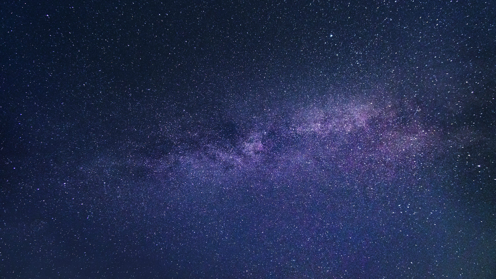

What is a Galaxy?
A galaxy is an immense, gravitationally bound system consisting of stars, stellar remnants (like white dwarfs and neutron stars), interstellar gas and dust, dark matter, and potentially planets. These cosmic islands drift through the universe, ranging in size from dwarf galaxies with just a few million stars to giants containing hundreds of trillions of stars, all orbiting a common center of mass.

Galaxies are the fundamental building blocks of the large-scale structure of the universe. They group together under gravity to form clusters and superclusters, separated by vast cosmic voids. Studying galaxies helps us understand the evolution of the universe, star formation, and the nature of dark matter.
Types of Galaxies
Galaxies are broadly classified based on their visual morphology (shape). The main types include:
-
Spiral Galaxies:
Characterized by a flat, rotating disk containing stars, gas, and dust, often organized into prominent spiral arms. They typically have a central bulge housing older stars. Our Milky Way is a barred spiral galaxy.
-
Elliptical Galaxies:
These galaxies have a smooth, ellipsoidal (oval) shape and lack distinct spiral arms. They contain mostly older stars, have very little interstellar gas and dust, and exhibit less active star formation compared to spirals.
-
Irregular Galaxies:
Lacking a distinct, regular shape, these galaxies often appear chaotic. Their structure might be the result of gravitational interactions or collisions with other galaxies, triggering bursts of star formation.
Lenticular Galaxies:
Considered an intermediate type between spirals and ellipticals. They have a disk component like spirals but lack prominent spiral arms and have little ongoing star formation, similar to ellipticals.
Our Home: The Milky Way
We live inside the Milky Way, a large barred spiral galaxy estimated to be about 100,000-120,000 light-years in diameter. It contains an estimated 100-400 billion stars, including our own Sun.

Our solar system is located in one of the Milky Way's minor spiral arms, the Orion Arm (or Orion Spur), about 27,000 light-years from the galactic center. At the heart of our galaxy lies a supermassive black hole named Sagittarius A* (pronounced "A-star"), with a mass about 4 million times that of our Sun.
Our Neighbor: Andromeda (M31)
The Andromeda Galaxy (Messier 31 or M31) is the nearest large spiral galaxy to the Milky Way, located approximately 2.5 million light-years away in the constellation Andromeda. It's slightly larger than the Milky Way in diameter and contains perhaps one trillion stars.

Under dark skies, Andromeda is visible to the naked eye as a faint, fuzzy patch. It's part of the Local Group of galaxies, along with the Milky Way and Triangulum Galaxy. Excitingly (or perhaps terrifyingly), Andromeda is on a collision course with the Milky Way, predicted to merge with our galaxy in about 4.5 billion years, forming a giant elliptical galaxy sometimes dubbed "Milkomeda".
Cosmic Mysteries: Black Holes
Black holes are regions in spacetime where gravity is so strong that nothing—not even light—can escape. They form when massive stars collapse under their own gravity at the end of their lives. Smaller black holes (stellar mass) can have masses a few times that of our Sun.
Supermassive black holes, millions to billions of times the mass of the Sun, reside at the centers of most large galaxies, including our own Milky Way (Sagittarius A*) and Andromeda. While invisible themselves, their presence can be inferred by their gravitational effects on nearby stars and gas.
Stars: The Galaxy's Building Blocks
Stars are immense, luminous spheres of plasma held together by their own gravity. Nuclear fusion reactions in their cores, primarily converting hydrogen to helium, release tremendous amounts of energy, making them shine. Galaxies are primarily composed of these stellar bodies.
Stars vary greatly in size, mass, temperature, color, and lifespan. Massive blue stars burn hot and fast, living only millions of years, while smaller, cooler red dwarf stars can potentially live for trillions of years. Our Sun is a relatively average, middle-aged yellow dwarf star. The life cycle of a star dictates whether it ends as a white dwarf, neutron star, or black hole, enriching the galaxy with heavier elements in the process.
Cosmic Structures: Galaxy Clusters
Galaxies themselves are not uniformly distributed throughout the universe; they tend to congregate due to gravity. Groups and clusters are the largest known gravitationally bound structures.
Galaxy Groups:
Smaller collections, typically containing fewer than 50 galaxies. Our own Local Group, containing the Milky Way, Andromeda, Triangulum, and several dozen smaller dwarf galaxies, is an example.Galaxy Clusters:
Larger structures containing hundreds to thousands of galaxies, bound together by immense gravitational pull, largely attributed to dark matter. They also contain vast amounts of superheated gas (intracluster medium).
These clusters and groups are interconnected, forming even larger structures called superclusters, which are arranged in filaments and walls surrounding vast, relatively empty regions known as cosmic voids.
Interesting Galaxy Facts
- The light we see from the Andromeda Galaxy left it 2.5 million years ago!
- Some galaxies have "active galactic nuclei" (AGN) powered by accretion onto their central supermassive black holes, making them incredibly luminous (quasars are an example).
- Galaxies grow through mergers and by accreting smaller dwarf galaxies and gas clouds over billions of years.
- Dark matter, an invisible substance, makes up about 85% of the total matter in the universe and plays a crucial role in galaxy formation and structure.
- The oldest known galaxy observed so far formed just a few hundred million years after the Big Bang.